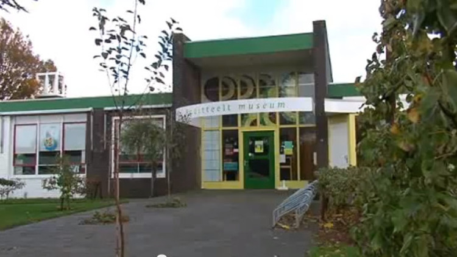
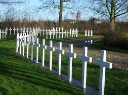

 Het Fruitteeltmuseum in Kapelle bevindt zich midden tussen de boomgaarden van Zeeland. Het museum is een ontdekkingsreis door de geschiedenis van fruit en fruitteelt, vanaf de Romeinen tot het heden.Luiken, kijkkasten, authentiek gereedschap en een werkende veilingklok maken het museum tot een beleving voor jong en oud.
 Het Franse ereveld in Kapelle herbergt de stoffelijke overschotten van 229 Franse militairen die tijdens de Tweede Wereldoorlog op Nederlands grondgebied zijn begraven. Van de 229 militairen zijn er 23 met Noord-Afrikaanse afkomst en 1 uit Syrië.